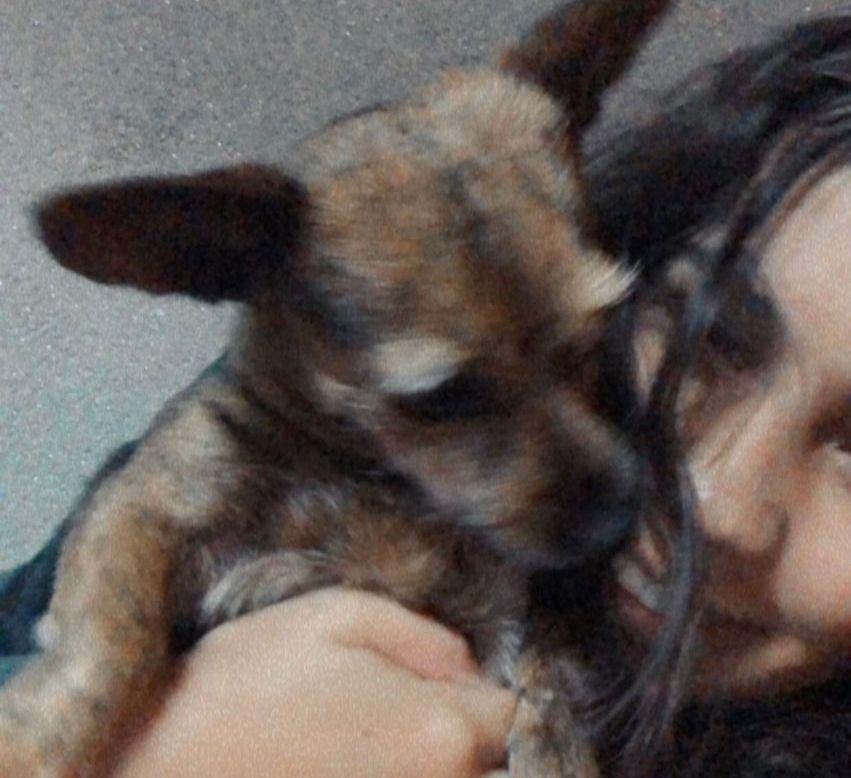
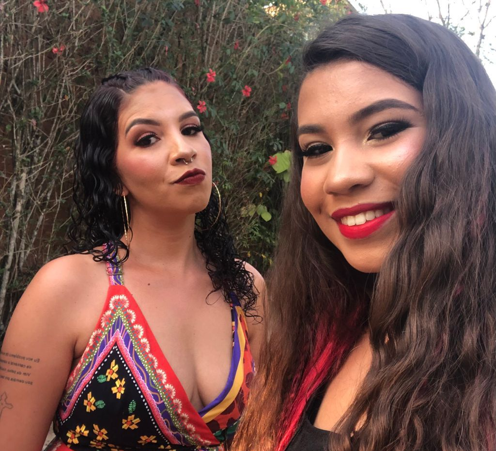

YASMIN SAMPAIO
QUANDO PENSAR EM DESISTIR, LEMBRE-SE DO PORQUE COMEÇOU


Sou a Yasmin Sampaio, tenho 15 anos, nasci dia 10/03/2006 em Montes Claros (MG). Estudei do 1º ou 5º ano no Júlio Mesquita, 6º ao 9º ano no Antônio Caio e atualmente estudo na Etec João Maria Stevanatto, onde faço o ensino médio e o curso de desenvolvimento de sistema integrado. Morei até os 2 anos em Montes Claros e depois viemos para Itapira onde moro atualmente. Gosto muito de viajar, sair com a minha família, com amigos e fazer vídeos no tiktok. Uma das coisas mais importantes para mim, foi passar na Etec e no Sesi, sempre foi meu sonho entrar em uma escola com um ensino igual a esses. Por conta do curso, optei por entrar na Etec.